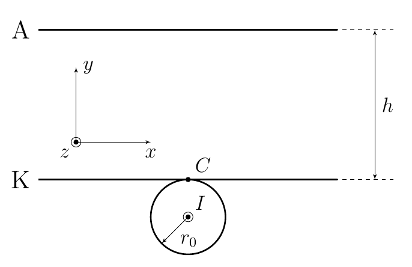
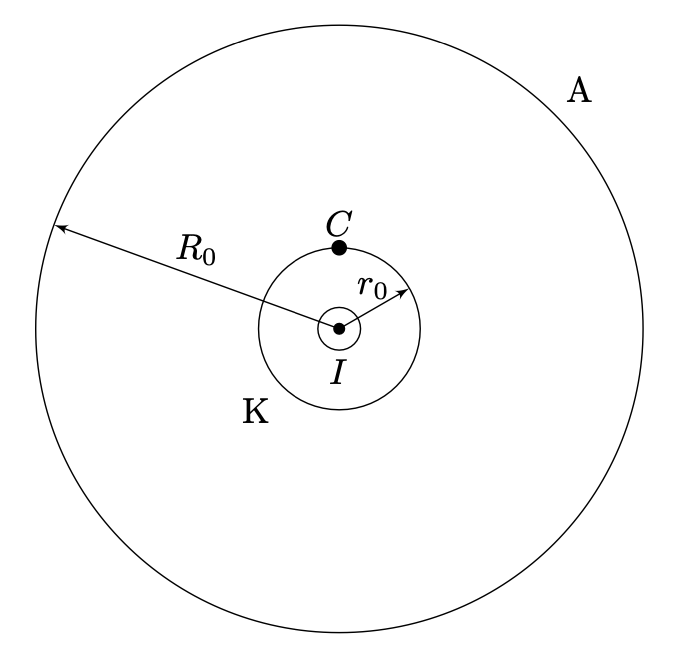
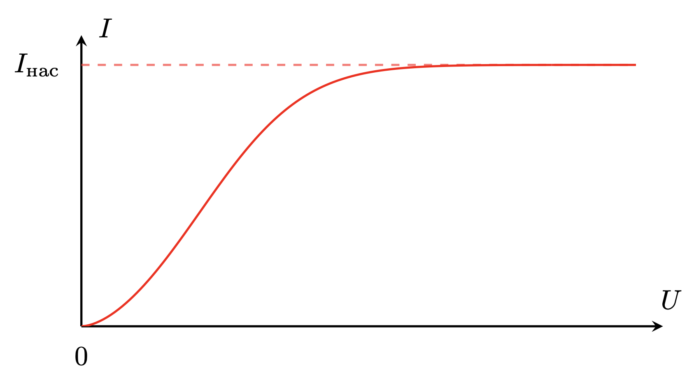
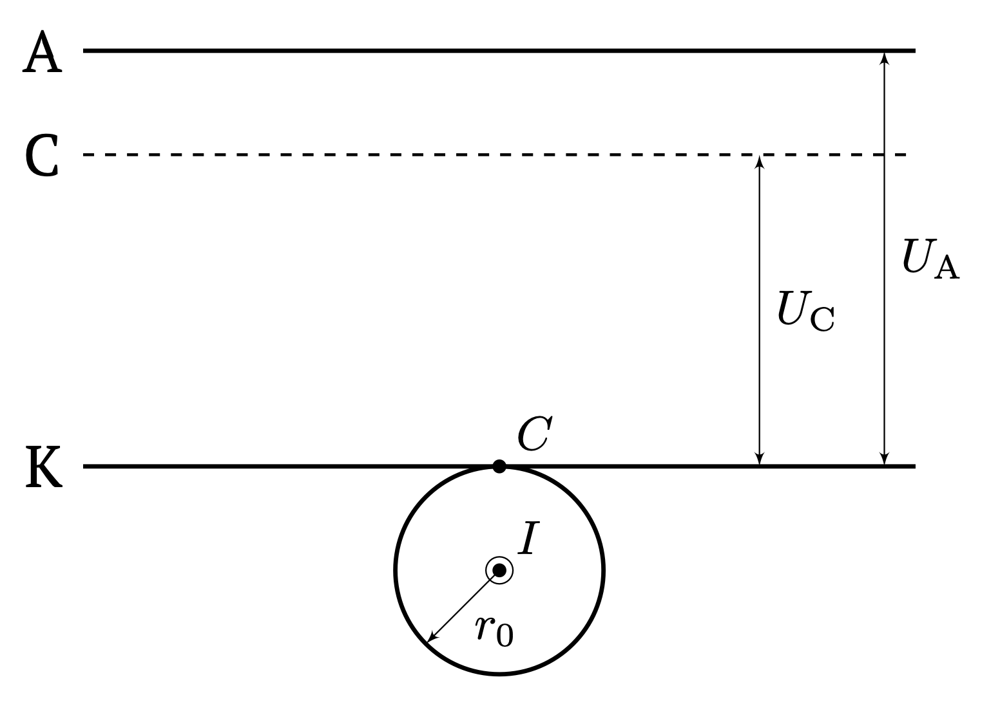
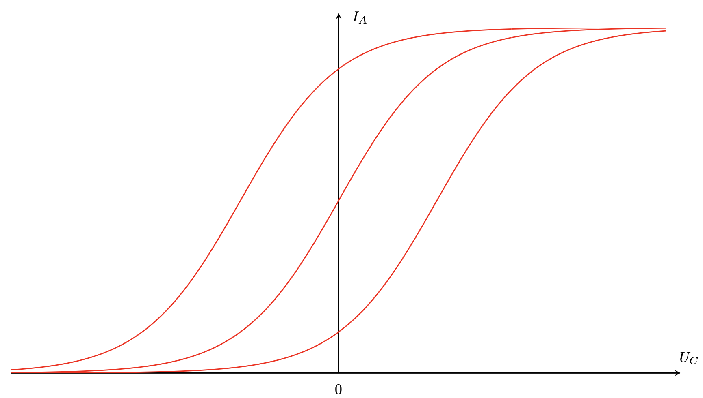
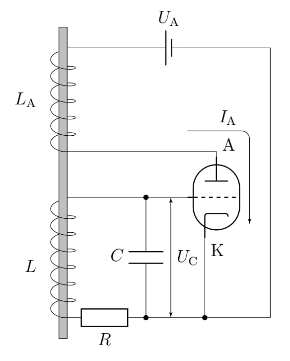

Y25 (2025) — English translation
This problem is about a device called a vacuum tube. Electronic tubes are different in their shape and design, but the principle of operation is the same for all: two electrodes are located in an evacuated flask: a cathode and an anode. The cathode is heated by the flow of electric current through it (or through a nearby heater), which leads to thermionic emission - the emission of electrons from its surface. There is a potential difference between the cathode and anode, leading to further movement of electrons in a vacuum. In addition to the cathode and anode, the volume of the lamp may contain other elements (for example, so-called grids) that affect the movement of electrons in the lamp. In all answers to this problem, in addition to the quantities indicated in each paragraph, you can use: magnetic constant $\mu_0 = 4\pi \cdot 10^{-7}~Н/А^2$; electrical constant $\varepsilon_0 = 8.85 \cdot 10^{-12}~Ф/м$; Boltzmann constant $k = 1.38\cdot10^{-23}~Дж/К$; electron mass $m = 9.1 \cdot 10^{-31}~кг$; electron charge module $e = 1.6 \cdot 10^{-19}~Кл$. Note. The problem will require solving an equation of the form $$\psi''(z) = f(\psi(z)),$$ которое после домножения обеих частей на $\psi'(z)$ и интегрирования преобразуется к виду $$\int \psi'(z) \psi''(z) dz = \int f(\psi(z)) \psi'(z) dz.$$ Интегрирование даёт $$\frac{\psi'(z)^2}{2} = \int f(\psi(z)) d\psi(z) + C,$$ где $C$ – константа, определяемая из начальных условий. После вычисления интеграла в правой части уравнения для заданной функции $f$ переменные разделяются.
Кроме катода и анода в объёме лампы могут находится другие элементы (например, так называемые сетки), влияющие на движение электронов в лампе.
Во всех ответах этой задачи кроме указанных в каждом пункте величин вы можете использовать:
Примечание. В задаче потребуется решать уравнение вида
$ $\psi''(z) = f(\psi(z)),$$
которое после домножения обеих частей на $\psi'(z)$ и интегрирования преобразуется к виду
$$\int \psi'(z) \psi''(z) dz = \int f(\psi(z)) \psi'(z) dz.$$
Интегрирование даёт
$$\frac{\psi'(z)^2}{2} = \int f(\psi(z)) d\psi(z) + C,$$
где $C$ – константа, определяемая из начальных условий. После вычисления интеграла в правой части уравнения для заданной функции $f$ variables are separated.
Let's consider a vacuum diode - a lamp in the volume of which the cathode and anode are located. Let the cathode and anode be thin parallel plates of area $S$. The distance between the plates is $h$, and $h \ll \sqrt{S}$. The cathode is heated by means of a straight long wire of radius $r_0$ pressed closely to it. A current $I$ uniformly distributed over the cross-section flows through the wire. Let's direct the $x$ axis in the figure to the right, parallel to the plates, and the $y$ axis upward, perpendicular to the plates. For the origin of coordinates, we select the point $C$, located above the wire. The $z$ axis will be directed perpendicular to the drawing towards us.
Let's consider a vacuum diode - a lamp in the volume of which the cathode and anode are located. Let the cathode and anode be thin parallel plates of area $S$. The distance between the plates is $h$, and $h \ll \sqrt{S}$. The cathode is heated by means of a straight long wire of radius $r_0$ pressed closely to it. A current $I$ flows through the wire, uniformly distributed over the cross-section. Let's direct the $x$ axis in the figure to the right, parallel to the plates, and the $y$ axis upward, perpendicular to the plates. For the origin of coordinates, we select the point $C$, located above the wire. The axis $z$ will be directed perpendicular to the drawing towards us.

First, let's consider the movement of the first emitted electron after the current is turned on, that is, while there is no space charge in the space between the electrodes. In this case, the electron moves in the electric field of the cathode and anode, as well as in the magnetic field created by the heater current. The potential difference between the cathode and anode is constant and equal to $U= \varphi_А - \varphi_К > 0$.
Let's look at another commonly used anode and cathode configuration. Let the cathode be a metal wire of radius $r_0$, length $L$, through which a uniformly distributed current $I$ flows; the flow of current heats the wire, which leads to the emission of electrons. The anode is the surface of a cylinder of radius $R_0$, length $L$ ($L \gg R_0$). As before, the potential difference between the anode and cathode is $U= \varphi_А - \varphi_К > 0$.
Let's look at another commonly used anode and cathode configuration. Let the cathode be a metal wire of radius $r_0$, length $L$, through which a uniformly distributed current $I$ flows; the flow of current heats the wire, which leads to the emission of electrons. The anode is the surface of a cylinder of radius $R_0$, length $L$ ($L \gg R_0$). As before, the potential difference between the anode and cathode is $U= \varphi_А - \varphi_К > 0$.

In steady state, electrons move from the cathode to the anode, creating a current depending on the voltage $U$ applied to the lamp. The presence of electrons in the interelectrode space leads to a certain steady distribution of charge density and potential in it. This part is devoted to finding the diode’s current-voltage characteristics, spatial distributions of potential and charges. In reality, in lamps there is always $I \ll I_{кр}$, so in the future we will consider movement only in an electric field. Also, in what follows we will neglect the initial velocity of the electrons. This assumption works well for $kT \ll e U$, where $T$ is the cathode temperature. Let's consider a flat configuration. We will assume that each electron moves in the average potential created by all other electrons. Let $\rho(y)$, $\varphi(y)$ be the dependences of the charge density and potential on the coordinate $y$. For definiteness, we will assume the cathode potential to be zero ($\varphi(0) = 0$).
This part is devoted to finding the diode’s current-voltage characteristics, spatial distributions of potential and charges.
In reality, in lamps there is always $I \ll I_{кр}$, so in the future we will consider movement only in an electric field. Also, in what follows we will neglect the initial velocity of the electrons. This assumption works well for $kT \ll e U$, where $T$ is the cathode temperature.
Let's consider a flat configuration.
We will assume that each electron moves in the average potential created by all other electrons. Let $\rho(y)$, $\varphi(y)$ be the dependences of the charge density and potential on the coordinate $y$. For definiteness, we will assume the cathode potential to be zero ($\varphi(0) = 0$).
We will assume that there is no electric field directly at the cathode, which gives another initial condition: $\varphi'(0) = 0$.
The quantity $G$ is called the lamp perveance.
Let's consider a cylindrical configuration. Let us denote $r$ – the distance from the wire axis to the electron. The potential distribution in such a system is a function of $r$ only.
Let us denote $r$ – the distance from the wire axis to the electron. The potential distribution in such a system is a function of $r$ only.
The resulting equation cannot be solved analytically, but it can be shown that for a cylindrical configuration the current-voltage characteristic has the same form with the same exponent $\gamma$.
The power-law form of the current-voltage characteristic predicts an unlimited increase in $I$ with increasing $U$. In reality this does not happen, since the current $I$ is limited by the rate of electron emission from the cathode. At high voltages, the current is equal to the saturation current $I_{нас}$. The characteristic empirical dependence of the lamp current on voltage is presented in the graph.
The power-law form of the current-voltage characteristic predicts an unlimited increase in $I$ with increasing $U$. In reality this does not happen, since the current $I$ is limited by the rate of electron emission from the cathode. At high voltages, the current is equal to the saturation current $I_{нас}$. The characteristic empirical dependence of the lamp current on voltage is presented in the graph.

Let now a conducting grid having a potential $\varphi_С$ be introduced into the space between the plates parallel to them. Voltage $U_С = \varphi_С - \varphi_К$ is called grid voltage, $U_А = \varphi_А - \varphi_К$ anode. Such a system is called a triode. We will assume that the grid is large enough so that all electrons moving in the space of the lamp pass through it, i.e., no current drains from the grid. The presence of a grid changes the potential distribution in space and thus makes it possible to control the electron current. The current flowing between the anode and cathode $I_А$ depends on both $U_C$ and $U_А$. Dependences of $I_А$ on $U_С$ at $U_А = \mbox{const}$. for different values of $U_А$ are presented in the figure below.
Let us now assume that a conducting grid having a potential $\varphi_С$ is introduced into the space between the plates parallel to them. Voltage $U_С = \varphi_С - \varphi_К$ is called grid voltage, $U_А = \varphi_А - \varphi_К$ anode. Such a system is called a triode. We will assume that the grid is large enough so that all electrons moving in the space of the lamp pass through it, i.e., no current drains from the grid. The presence of a grid changes the potential distribution in space and thus makes it possible to control the electron current. The current flowing between the anode and cathode $I_А$ depends on both $U_C$ and $U_А$. Dependences of $I_А$ on $U_С$ at $U_А = \mbox{const}$. for different values of $U_А$ are presented in the figure below.

Dependences $I_А(U_С)$ for various fixed $U_А$

Now consider an electrical circuit with a triode called a van der Pol oscillator. Such a generator allows you to excite periodic oscillations in the presence of only a direct current source. Let us consider in more detail the mechanism of excitation of oscillations. The necessary designations of elements, currents and voltages are indicated in the figure. In the absence of voltage on the capacitor, which, as can be seen in the diagram, coincides with the grid voltage $U_С$, it is possible to select the anode voltage $U_А$ so that the dependence $I_А(U_С)$ at $U_А = \mbox{const}$. near $U_С = 0$ could be represented as $$I_А(U_С) \simeq I_0 + \lambda U_С - \mu U_С^3, \tag{1}$$ где $\lambda$, $\mu$ – положительные константы. Сделаем следующие приближения: Для рассматриваемых далее значений $U_С$ формула $(1)$ выполнена в точности. Будем считать ЭДС, наводимую катушкой $L$ в катушке $L_А$, пренебрежимо малой по сравнению с напряжением анода, поэтому анодное напряжение $U_А$ остаётся константой, совпадающей с напряжением батарейки. Катушка $L_A$, создает в катушке $L⟦M15 ⟧$\mathcal{E} = M \frac{dI_А}{dt},$$ где $M$ – коэффициент взаимной индукции катушек. Знак $M$ зависит от взаимной ориентации катушек, а также от выбранного направления обхода RLC-контура. В связи с этим далее неважны знаки $\mathcal{E}$ и $M$, вы можете выбрать их произвольно .
Теперь рассмотрим электрическую схему с триодом, называемую генератором Ван-дер-Поля . Такой генератор позволяет возбуждать периодические колебания при наличии только источника постоянного тока. Рассмотрим подробнее механизм возбуждения колебаний. Необходимые обозначения элементов, токов и напряжений обозначены на рисунке. В отсутствие напряжения на конденсаторе, которое, как видно на схеме, совпадает с сеточным напряжением $U_С$, можно так подобрать анодное напряжение $U_А$, чтобы зависимость $I_А(U_С)$ при $U_А = \mbox{const}$. вблизи $U_С = 0$ была представима в виде $$I_А(U_С) \simeq I_0 + \lambda U_С - \mu U_С^3, \tag{1}$$ где $\lambda$, $\mu$ – положительные константы. Сделаем следующие приближения: Для рассматриваемых далее значений $U_С⟦M 31⟧(1)$ выполнена в точности. Будем считать ЭДС, наводимую катушкой $L$ в катушке $L_А$, пренебрежимо малой по сравнению с напряжением анода, поэтому анодное напряжение $U_А$ остаётся константой, совпадающей с напряжением батарейки. Катушка $L_A$, создает в катушке $ L$ ЭДС индукции $$\mathcal{E} = M \frac{dI_А}{dt},$$ где $M$ – коэффициент взаимной индукции катушек. Знак $M$ зависит от взаимной ориентации катушек, а также от выбранного направления обхода RLC-контура. В связи с этим далее неважны знаки $\mathcal{E}⟦M 42⟧M$, вы можете выбрать их произвольно .
Теперь рассмотрим электрическую схему с триодом, называемую генератором Ван-дер-Поля . Такой генератор позволяет возбуждать периодические колебания при наличии только источника постоянного тока. Рассмотрим подробнее механизм возбуждения колебаний.
Необходимые обозначения элементов, токов и напряжений обозначены на рисунке.
В отсутствие напряжения на конденсаторе, которое, как видно на схеме, совпадает с сеточным напряжением $U_С$, можно так подобрать анодное напряжение $U_А$, чтобы зависимость $I_А(U_С)$ при $U_А = \mbox{const}$. вблизи $U_С = 0$ была представима в виде
$$I_А(U_С) \simeq I_0 + \lambda U_С - \mu U_С^3, \tag{1}$$
где $\lambda$, $\mu$ are positive constants.
Let's make the following approximations:

Let at the initial moment $U_С = 0$. It turns out that with a certain ratio of the circuit parameters, automatic buildup of oscillations (increase in amplitude with time) is possible, followed by a gradual approach to the periodic regime with an arbitrarily small deviation of $U_С$ from zero.
Source: https://pho.rs/p/4223